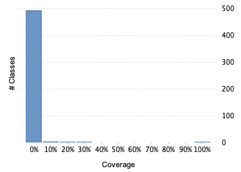
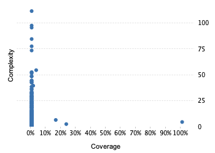

Project overview
Code coverage 510 classes, 52 / 21,484 elements
0.00242040590.2%
Test results 2 / 2 tests 0.08 secs
1.0100%
Code metrics
4,444
14,923
2,117
510
493
16
48,853
33,444
5,265
0.35
7.05
4.15
31.88
2.49
Class Coverage Distribution

Class Complexity

Coverage tree map
Generating Coverage Tree Map. Please wait...

Top 20 project risks
Gps103ProtocolDecoder
BasePipelineFactory
NoranProtocolDecoder
SkypatrolProtocolDecoder
AplicomProtocolDecoder
IgnitionEventHandler
Tk103ProtocolDecoder
TytanProtocolDecoder
BlackKiteProtocolDecoder
BceProtocolDecoder
MiniFinderProtocolEncoder
OrionFrameDecoder
CellocatorFrameDecoder
MiniFinderProtocolDecoder
UlbotechFrameDecoder
AutoFonFrameDecoder
CorsResponseFilter
TotemProtocolDecoder
RuptelaProtocolDecoder
OsmAndProtocolDecoder
Most complex packages
| 1. | 0.00320870550.3% |
org.traccar.protocol 3089 |
| 2. | 0.00% |
org.traccar.database 520 |
| 3. | 0.00416088760.4% |
org.traccar 419 |
| 4. | 0.00% |
org.traccar.model 316 |
| 5. | 0.00% |
org.traccar.helper 253 |
Most complex classes
| 1. | 0.00% |
AplicomProtocolDecoder 113 |
| 2. | 0.00% |
QueryBuilder 99 |
| 3. | 0.00% |
PermissionsManager 97 |
| 4. | 0.00% |
Gl200ProtocolDecoder 86 |
| 5. | 0.00% |
DataManager 79 |